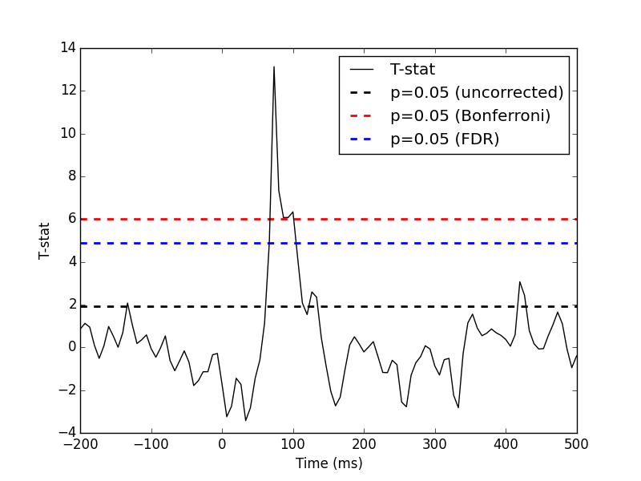

One tests if the evoked response significantly deviates from 0. Multiple comparison problem is addressed with False Discovery Rate (FDR) correction.
Python source code: plot_fdr_stats_evoked.py
# Authors: Alexandre Gramfort <alexandre.gramfort@telecom-paristech.fr>
#
# License: BSD (3-clause)
import numpy as np
from scipy import stats
import matplotlib.pyplot as plt
import mne
from mne import io
from mne.datasets import sample
from mne.stats import bonferroni_correction, fdr_correction
print(__doc__)
###############################################################################
# Set parameters
data_path = sample.data_path()
raw_fname = data_path + '/MEG/sample/sample_audvis_filt-0-40_raw.fif'
event_fname = data_path + '/MEG/sample/sample_audvis_filt-0-40_raw-eve.fif'
event_id, tmin, tmax = 1, -0.2, 0.5
# Setup for reading the raw data
raw = io.Raw(raw_fname)
events = mne.read_events(event_fname)[:30]
channel = 'MEG 1332' # include only this channel in analysis
include = [channel]
###############################################################################
# Read epochs for the channel of interest
picks = mne.pick_types(raw.info, meg=False, eog=True, include=include,
exclude='bads')
event_id = 1
reject = dict(grad=4000e-13, eog=150e-6)
epochs = mne.Epochs(raw, events, event_id, tmin, tmax, picks=picks,
baseline=(None, 0), reject=reject)
X = epochs.get_data() # as 3D matrix
X = X[:, 0, :] # take only one channel to get a 2D array
###############################################################################
# Compute statistic
T, pval = stats.ttest_1samp(X, 0)
alpha = 0.05
n_samples, n_tests = X.shape
threshold_uncorrected = stats.t.ppf(1.0 - alpha, n_samples - 1)
reject_bonferroni, pval_bonferroni = bonferroni_correction(pval, alpha=alpha)
threshold_bonferroni = stats.t.ppf(1.0 - alpha / n_tests, n_samples - 1)
reject_fdr, pval_fdr = fdr_correction(pval, alpha=alpha, method='indep')
threshold_fdr = np.min(np.abs(T)[reject_fdr])
###############################################################################
# Plot
times = 1e3 * epochs.times
plt.close('all')
plt.plot(times, T, 'k', label='T-stat')
xmin, xmax = plt.xlim()
plt.hlines(threshold_uncorrected, xmin, xmax, linestyle='--', colors='k',
label='p=0.05 (uncorrected)', linewidth=2)
plt.hlines(threshold_bonferroni, xmin, xmax, linestyle='--', colors='r',
label='p=0.05 (Bonferroni)', linewidth=2)
plt.hlines(threshold_fdr, xmin, xmax, linestyle='--', colors='b',
label='p=0.05 (FDR)', linewidth=2)
plt.legend()
plt.xlabel("Time (ms)")
plt.ylabel("T-stat")
plt.show()
Total running time of the example: 0 seconds